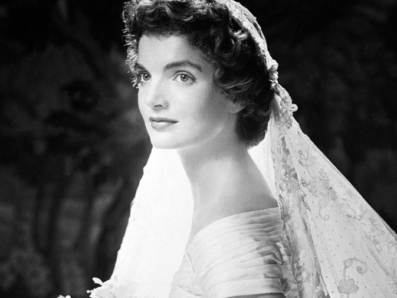

Chương 5

Một khuôn mặt mới mẻ lúc bấy giờ cũng phải nhận lấy tiền lệ giữa các người đàn bà thuộc gia đình Kennedy: Jaqueline Bouvier Kennedy..

Nàng không chỉ nhận lấy vị thế của nàng như là vợ của Tổng thống, Đệ nhất phu nhân, mà còn như là một người họ Kennedy và mẹ của các đứa trẻ họ Kennedy.
Nàng là ai, đúng trong vị thế của riêng nàng?
Tôi xin nói nhận xét đầu tiên của tôi về nàng. Tôi gặp nàng lần đầu trong bữa tiệc do chồng nàng, Tổng thống Kennedy, và nàng khoản đãi những người Mỹ chiếm giải Nobel. Đó là lần đầu tiên chúng tôi được danh dự này bởi vì, cho đến bây giờ, nhiều vị Tổng thống của chúng tôi vẫn lấy làm phiền phức về một đại hội như vậy Nhưng riêng Tổng thống Kennedy và phu nhân thì không lấy làm khó chịu khi phải đứng trước bọn mệnh danh là trí thức, và vì vậy, tất cả chúng tôi mới có dịp tụ tập ở phòng phía đông toà Bạch ốc để chờ hai người đến.
Tôi đã từng gặp đủ hạng viên chức cao cấp nhất trên thế giới, nên tôi cũng không lấy gì làm lạ về quang cảnh cuộc gặp gỡ vị Tổng thống trong chính xứ sở của tôi, mặc dù tình yêu quê hương trong tôi luôn luôn có sự thiên lệch mạnh mẽ. Nhưng, tôi đã xúc động thật sự, một ngọn gió kiêu hãnh, có thể nói như vậy, khi bản quân nhạc trỗi lên báo hiệu vị Tổng thống trẻ tuổi của chúng tôi và phu nhân đến. Chúng tôi, những người lãnh giải Nobel, tất cả đều là khoa học gia, ngoại trừ tôi, đứng thành hàng chờ đợi.
Quân nhạc trỗi lên và kế tiếp là những lá cờ đầy màu sắc, được mang bởi một toán binh sĩ danh dự, hùng dũng tiến ra, và phía sau họ, song song xuất hiện vị Tổng thống trẻ tuổi đẹp trai cửa chúng tôi và người vợ duyên dáng của ông. Cả hai đều tươi cười, cả hai nổi bật hẳn, cả hai là bao gồm của sự vui vẻ, hạnh phúc, trẻ trung và toàn mỹ. Quan khách lúc bấy giờ trở thành khán giả bừng cháy sự tán thưởng. Cảm giác của một ngọn sóng yêu mến và cảm phục dâng lên, hướng về đôi vợ chồng ngoạn mục này, lúc họ đang tươi cười và không kiểu cách, tiến về chúng tôi và nồng nhiệt bắt tay từng người một. Chúng tôi không quen với sự tiếp đón và mến mộ như thế. Tôi thấy đôi mắt của một số người lớn tuổi long lanh.
Jacqueline có dáng vẻ đài các và vương giả, dù cả khi nàng e thẹn, và tiếng nói của nàng, mà tôi chỉ được nghe trước đây qua truyền hình, có vẻ trầm ấm và dịu dàng hơn. Nhưng, linh tính của phái nữ trong tôi, cho tôi thấy có một cái gì đó đổ vỡ ẩn bên dưới sự bền vững bên ngoài của nàng.
Sau đó, tôi có dịp may quan sát Jacqueline trọn vẹn. Tôi được ngồi chung bàn với nàng. Trong suốt thời gian Kennedy làm chủ toà Bạch ốc, ông có thói quen sắp xếp các thực khách ngồi quanh các bàn tròn nhỏ thay vì một bàn dài. Bữa tiệc khoản đãi những người đoạt giải Nobel này được dành sự cung kính đặc biệt cho Đại tướng George Marshall và nhà văn Emest Hemingway. Cả hai đã quá cố, nhưng hai quả phụ của họ được xếp hai chỗ ngồi danh dự, chung bàn với Tống thống.
Tôi cũng có may mắn được ngồi cạnh nhà thiên văn học lừng danh John Glenn, người tôi rất muốn gặp nhưng tôi sợ đàm đạo nhiều với ông làm tôi không có dịp quan sát kỹ nữ chủ nhân.
Tôi đã quan sát nàng, dĩ nhiên, như một người đàn bà nhìn một người đàn bà, đặc biệt một người đàn bà đáng yêu như nàng, và tôi quan sát những trạng thái biến đổi của nàng, những biểu lộ của mừng, vui và ưu sầu trên khuôn mặt nàng, giữa những câu đối đáp khác nhau với mỗi người một.
Tôi không định nói đến hai tiếng táo bạo hoặc mãnh liệt. Tôi không bao giờ hồ nghi sự chân thật trong các phản ứng của nàng, chỉ vì các phản ứng này quá nhanh chóng và bất ngờ. Tuy nhiên, có một niêm bí ẩn trong ngôn ngữ của nàng và hoàn toàn không thể đoán trước được. Phụ tá Tổng thống David Powers đã nói một câu thật vắn tắt, nhưng đầy đủ: Ngay khi mà bạn chắc chắn đã hiểu biết bà ta, bạn hãy cẩn thận! Phu nhân cố Tống thống Eleanor Roosevelt một lần đã nói: Đối phó với nàng còn khó hơn mò kim đáy bể, và vị Đệ nhất phu nhân trẻ tuổi có được một phán xét bén nhạt thiên phú. Thực vậy, Jacqueline là một phu nhân Tổng thống được suy ngẫm và nói đến nhiều nhất kể từ khi Eleanor là nữ chủ nhân của Bạch ốc.
Như Eleanor, Jacqueline làm những gì mà nàng thích. Theo dư luận phàn nàn, nàng không có những yếu tố để có thể trở thành một hiền phụ của một vị Tống thống. Nhưng nàng không phải là người Mỹ tượng trưng nên bất kỳ phương diện nào.
Nàng không mang bản chất của một hiền phụ vì nàng đã hiểu bản chất này chỉ như là sự chiếm hữu và yêu đương, mà không hiểu như là sự bỏ cuộc và chịu thua của nó? Thản hoặc nàng nghĩ bề ngoài không cần thiết bằng những ẩn kín bên trong?
Nàng đã tạo ra nhiều thay đổi trong Bạch ốc, để nó trở thành một nơi cư trú theo ý riêng của nàng.
Và theo ý tôi, trên phương diện này nàng đã thành công hơn bất kỳ một vị Đệ nhất phu nhân nào vào Bạch ốc trước nàng.
Một bình luận gia về xã hội đã viết: Trước Jackie, Bạch Cung giống như một khách sạn Statler, ngay cả đến những cái gạt tàn thuốc hình như cũng thoát thai từ PX quân đội!
Lập tức, những người có thể gọi là bình thường như thế, bắt đầu đồng ý với nàng. Đồng ý những gì nàng làm thì ít mà đồng ý cách thức nàng làm thì nhiều. Thái độ mà: Tôi sẽ làm theo đường lối của tôi, như nàng, là thái độ của người Mỹ thực sự. Và nếu nàng nói các ngôn ngữ ngoại quốc, hoặc nàng làm thơ, đọc tiểu thuyết Pháp và thích ca vũ, đó cũng chẳng khác nào việc nàng muốn đi xuyên qua các văn phòng đầy bụi bặm, loại bỏ tất cả các đồ đạc lỗi thời được chưng dọn trong toà Bạch ốc và đẩy tất cả vào quên lãng.
Nàng cũng muốn dẹp bỏ tất cả di tích cổ được trưng bày cho du khách nhìn ngắm khi họ đến viếng Bạch ốc. Những di sản quý báu và là niềm kiêu hãnh của Hoa Kỳ đó... Nàng còn nắm giữ mọi lứa tuổi. Các thiếu nữ đã bắt chước mái tóc của nàng, mặc quần áo và mang các đôi găng ngắn màu trắng như nàng. Họ còn bắt chước ngay cả đến giọng nói hụt hơi của nàng nữa.
Nhiều người khác còn muốn rập khuôn dáng vẻ và nữ tính riêng của nàng, và ngay cả cử chỉ yêu thương bên ngoài mà nàng dành cho Caroline và John. Dân chúng đọc chuyện viết về nàng và các đứa con của nàng không biết mỏi mệt. Chẳng có vấn đề nào liên quan đến nàng mà họ cho là nhỏ mọn. Nàng thành một thần tượng, một minh tinh ngoại hạng. Và, như tôi đã ngắm nghía nàng trong bữa tiệc đêm đó, tôi biết tại sao nàng được xem là một người đàn bà thay vì một người tình, một người vợ, một người mẹ hoàn toàn.
Sau bữa tiệc, tất cả chúng tôi được hướng dẫn trở lại sang phòng phía đông. Các chiếc ghế thếp vàng, thành dựa đứng thẳng hợp thời trang, đã được xếp thành dãy, sẵn sàng cho cuộc tiếp đãi chúng tôi vào buổi tối. Mọi thứ ở hiện tại đều xa lạ trong ký ức tôi. Tôi nhớ lại trong khi chúng tôi ngồi chờ Tổng thống và phu nhân vào, một trong hai nữ thực khách danh dự tiến đến phía tôi và nói: Tôi thích cuốn So Big của bà.
Tôi không viết quyển sách đó, nhưng không muốn gây khó chịu cho người đối diện nên tôi cười và nói cảm ơn. May mắn, lúc đó Tổng thống bước vào phòng và chính ông là người giải thoát tôi ra khỏi vấn đề có hơi bất ngờ này.
Ông hỏi tôi:
- Về Đại Hàn, bà nghĩ là chúng ta có thể làm những gì ở đó? Tôi có sang Đại Hàn cách đây không lâu nhưng lúc này tôi hầu như đã quên hẳn cái xứ rắc rối đó. Tôi hỏi lại ông:
- Thưa Tổng thống, tại sao Tổng thống lại hỏi tôi?
- Bởi vì chúng ta không thể tiếp tục làm những gì mà chúng ta đang làm ở đó, ông đáp, một cách thẳng thắn và nhanh nhẹn: Nhật Bản phải giúp chúng ta tái thiết xứ sở đó.
Tôi biết rất rõ những cảm nghĩ của Đại Hàn hướng về Nhật Bản, kết quả qua nhiều thế kỷ của lịch sử, nhưng việc chấm dứt vai trò của Hoa Kỳ ở đó chưa có dịp để bắt đầu, đặc biệt như Robert Frost đã nói, vấn đề luôn luôn là mối lưu tâm của các Tổng thống.
Tôi nói:
- Thưa Tổng thống, hiện tôi đang viết một cuốn lịch sử tiểu thuyết về Đại Hàn, trong đó tôi giải thích tình thế hiện thời đối chiếu với các giai đoạn của quá khứ. Tựa của cuốn sách này là Cây Sậy Sống (The Living Seek) - bản dịch Pháp ngữ đổi tựa là Đất Triều Tiên, Terre Coréenne) ấn bản đầu tiên tôi sẽ gởi tặng Tổng thống.
Nhưng than ôi, khi quyển sách in xong, tôi gởi cho ông, lúc đó ông đang ở Texas, nhưng không bao giờ ông nhận được.
Ông đã chết.
Điều ghi nhớ sâu xa nhất trong ký ức tôi dành cho ông và người vợ duyên dáng của ông trong đêm dạ tiệc đó, là tuổi trẻ và sức sống tràn đầy của họ. Câu chuyện trang trọng giữa tôi với Jacqueline và nghi thức tiếp đãi của đêm đó gần như không làm tôi nhớ lâu, ngoại trừ khám phá đầu tiên của tôi về tính e thẹn của nàng, nó không rõ rệt đối với tôi trước đây, mặc dù tôi biết là tôi không lầm. Tôi cũng có tính e thẹn - gần như sợ sệt như thế. Ngay cả bây giờ tôi cũng còn sợ gặp những người lạ. Luôn luôn có một sự lo ngại. Tôi muốn thoát. Và tôi cảm thấy Jacqueline cũng vậy. Trong các câu ngắn trao đổi với nàng đêm đó, tôi nhận thấy sự rút lui trong nàng, nàng không hoà hợp với chúng tôi mà cũng không muốn tách rời. Đó là nhiên tính của nàng. Tôi khám phá được và dễ biết được vì tôi là một người biết rõ lai lịch gia đình nàng.
Sau đó, ở Ấn Độ, trong chuyến thăm viếng riêng của tôi tiếp theo sau chuyến đi ngắn ngủi của Jacqueline, hình như mọi người đều hỏi tôi về nàng, và đều muốn chia xẻ với tôi những cảm giác của họ đối với nàng.
Dĩ nhiên, tôi gần như sợ biết những gì mà người ta nghĩ về Jacqueline. Nhưng tôi hy vọng rằng, qua chuyến đi đó nàng sẽ hiểu. ở Ấn Độ, người ta bàn tán về nàng chẳng qua là những việc nàng làm không thích hợp với phong tục, tập quán của họ. Nhưng trái lại, tôi cũng nghe không thiếu sót sự kính mến mà người ta dành cho nàng. Bình phẩm đáng chú ý nhất, nếu có thể gọi như thế, đến tử một người bạn thân của tôi, một người đàn bà có chức phận cao trong chính quyền: Nàng như một cô gái vừa mới ra trường, nhưng nàng đã cố gắng một cách khó nhọc để làm cho mọi thứ tốt đẹp hơn. Dễ hiểu, bởi vì nàng là vợ Tống thống của các bạn.
Bình phẩm này có vẻ đơn giản, dù trong đó có sự thật. Jacqueline Onassis không còn là người trong gia đình Kennedy nữa. Nàng không còn là một người cầm đầu bởi gia hệ và truyền thống như đại gia đình này quy định. Gia đình Bouvier được mọi người ái mộ, họ hấp thụ một nền giáo dục tốt, nhưng không có những người lãnh đạo và rất ít truyền thống gia đình. Nàng không có trách nhiệm dẫn dắt một thế hệ mới. Các đứa con của nàng sẽ hấp thụ được ở nàng các phong thái tốt, các khuynh hướng mỹ quan, yêu cái đẹp của thiên nhiên. Nhưng người ta ngờ vực về việc sau này chúng sẽ trở thành những tay lãnh đạo tốt, như cảm nghĩ mà các con của Ethel Kennedy được dành cho. Tôi nhận thấy dân chúng Ấn Độ cũng hiểu tính chất cô độc trong nàng. Người Ấn Độ là một dân tộc có tính nhạy cảm phi thường, thông minh thiên phú của họ đã đưa đến những hiểu biết rốt ráo nhất, và tất nhiên, họ hiểu những vấn đề phức tạp vây quanh.
Jacqueline và bản tính yêu cái đẹp thiên nhiên của nàng. Một người đàn ông Ấn lớn tuổi và thận trọng, nói với tôi: Nàng sẽ luôn luôn cảm thấy không hạnh phúc ở một phương diện nào đó trong đời sống của nàng. Nàng được ánh sáng và bóng tối tạo nên, như thời gian đã tạo nên ngày và đêm.
° ° °
Tôi xin tiếp tục những phân tách riêng của tôi về người đàn bà được bàn tán và bị ghét bỏ này. Tôi cũng nói đến những gì tốt đẹp cũng như nghị lực và sự cô độc trong đời sống riêng tư của nàng.
Jacqueline cũng xuất thân từ một gia đình lớn.
Một gia đình mà bề thế và gia phả có nhiều phương diện giống với gia đình họ Kennedy, mặc dù một đến từ Ái Nhĩ Lan và một đến từ miền Nam nước Pháp.
Tổ tiên họ Bouvier đầu tiên rời bỏ quê hương để sang Hoa Kỳ là một thanh niên nghèo hai mươi ba tuổi, một người lính bộ binh dưới tướng của Nã Phá Luân, và một tay thương mãi tập sự ở Pont-Saint-Esprit, một làng nhỏ nằm cạnh giống sông Rhône (con sông chảy ngang qua Nam Thuỵ Sĩ và Đông Nam Pháp), cách bờ biển Địa Trung Hải khoáng bảy chục dặm.
Người Ái Nhĩ Lan tử tế và ôn hoà, cũng giống như người ở gần Địa Trung Hải. Michel Bouvier cũng là một tay khích động và ưa mạo hiểm, như Patrick Joseph Kennedy, khi quyết định sang lập nghiệp ở một xứ lạ.
Ngay cả thời gian phiêu lưu của hai người này cũng gần gũi nhau: cùng phân nửa đầu của một thế kỷ, Michel năm 1815, Joseph năm 1849. Tôi có phần nhấn mạnh về nguồn gốc gia tộc bởi tôi tin tưởng, qua kinh nghiệm bản thân, nó ảnh hưởng lớn đến giòng họ hơn là ngoại cảnh, và nghị lực mà Jacqueline Bouvier có được là do ảnh hưởng của tổ tiên nàng, và phương diện này cũng ảnh hưởng đến bản chất thích hợp của nàng với John Kennedy. Họ cũng cùng san sẻ truyền thống của người Mỹ qua một gia đình khiêm tốn lúc khởi nghiệp và sau đó bước sang giới thượng lưu một cách quá nhanh chóng. Trí tuệ của cả hai người không phải là di sản của tổ tiên mà bởi sự thay đổi phong cách của giòng họ. Cả hai cũng không có nền tảng vững chắc và bản năng đương nhiên của giới trí thức và thượng lưu, nghĩa là cả hai gia đình không được dựng nên bởi người của hai giới đó.
Cả hai gia đình Kennedy và Bouvier không những chia sẻ nguồn gốc hạ lưu mà còn chia sẻ cả trên phương diện thành công nhanh chóng của họ. Cả hai gia đình cũng được xây dựng bởi một cá nhân cương nghị và can đảm duy nhất: Michel Bouvier và Patrick Joseph.
Nhưng có một khác biệt quan trọng giữa hai giòng họ này.
Gia đình Kennedy hiện tại vẫn còn là một gia đình lớn. Gia đình Bouvier hiện tại đã suy sụp. Gia đình Kennedy vẫn còn là một khối duy nhất ; những người đàn ông đàn bà và các đứa trẻ của gia đình này là một khối duy nhất: Gia đình Bouvier đã ly tán, mỗi người sống một đời sống riêng. Sự thuỷ chung và tính tương trợ vẫn là sức mạnh tiềm ẩn liên tục của người mang họ Kennedy. Ngay cả những tin đồn mới đây về xì-căn-đan quanh Ted và Mary Jo Kopechme, cô gái chết trong tai nạn xe hơi do Ted gây ra, vẫn không có dấu hiệu nào cho thấy có sự xao xuyến trong gia đình này, hoặc có chứng cớ cho thấy Ted đã mất niềm tin đối với gia đình. Họ vẫn nhất định là họ có thể đuổi kịp định mệnh. Một lần nữa, tôi giải thích sức mạnh của sự hợp nhất này, là chỉ do bởi lòng tin đến từ mục tiêu không mới mẻ của họ: đạt cho được quyền lực chính trị.
Jacqueline Kennedy đã hấp thụ được năng lực từ ông tổ của gia đình này: Michel Bollier. Đầu tiên, ông ta làm nghề thợ mộc khi vừa đến Philadelphia nơi có nhiều người Pháp đến trước và sinh cư lập nghiệp ở đó. Hai người Pháp khác. Joseph Bonaparte, một vị Hoàng đế Tây Ban Nha lưu vong, và Stephen Girard, đã giúp đỡ ông bước vào thương trường. Cà hai người lúc ấy đã giàu có và rất thích đồ gỗ mỹ thuật.
Mùa hạ năm 1816, Michel giúp việc trong dinh thự mùa hè Point Breeze của Joseph Bonaparte. Dinh thự này ở gần tỉnh Borden cạnh giống sông Dellaware thuộc Jersey Island, nằm bên trong một trong mười trang trại đẹp nhất ở đó. Khởi từ một tên thợ mộc tầm thường, Michel Bouvier trở thành một người làm đồ gỗ chuyên nghiệp.
Vào năm 1818 ông lại đến chỗ Joseph Bonaparte và nổi tiếng. Năm kế ông mở riêng một cửa hàng. Hai năm sau, dinh Point Breeze bị cháy rụi và ông được yêu cầu đứng ra trông coi việc xây cất lại. Mất ba năm công việc mới hoàn tất. Trong thời gian này cửa hàng của ông ở Philadelphia vẫn hoạt động.
Nhiều năm sau, công việc làm ăn càng ngày càng thịnh vượng. Vào tháng 6 năm 1822, Michel kết hôn với cô Sarah Anne Pearson. Hai năm trôi qua, một đứa con trai ra đời, Michel đặt tên là Eutache và tiếp tục như thế, những người mang họ Bouvier dựng hẳn nên một gia đình Hoa Kỳ mới thật sự, thành công tài chánh của họ vẫn còn khiêm nhường, và họ vẫn phải làm việc không ngừng. Tuy nhiên ngoài một người thợ, ông còn là một người biết ôm mộng và ông cỏ thể nhìn về phía trước, đến những nơi cao nhất trong xứ sở mới này.
Mười năm đã trôi qua, kể từ khi ông đặt chân lên bờ biển này, và trong mười năm nữa cái gì lại có thể không xảy ra? Một đứa trẻ thứ hai ra đời, một bé gái, và tất cả gia đình Bouvier đều hướng nhìn về chân trời chói lọi.
Nhưng thành công lại níu kéo thêm bi thảm. Khi đứa con gái, Sarah, được năm tháng, người vợ trẻ của ông nằm xuống vĩnh viễn. Michel đau thương, chán chường tột độ, nhưng quá trễ để ông trở về quê hương cũ. Tất cả tiền bạc đầu tư của ông lúc đó đều ở Hoa Kỳ.
Sau khi vợ mất, công việc buôn bán cửa ông khó khăn hơn, Michel Bouvier lại bước thêm bước nữa. Tên người vợ kế của ông là Louise Vernou, và qua người đàn bà khoẻ mạnh này, ông ước mơ có được mười người con bên cạnh các giấc mơ kiếm lợi khác. Người đàn bà ấy là bao gồm sự tháo vát, chí khí và quí phái. Gia đình nàng không giàu, nhưng cha của nàng là một người Pháp dòng dõi và ông nội của nàng từng là một viên chức cao cấp làm việc ở Hoa Thịnh Đốn. Hơn nữa, nàng hấp thụ được giáo huấn gia đình khá hoàn mỹ.
Tất cả mọi phương diện vừa nêu, Michel đều thiếu.
Thành công luôn luôn đến với Michel, năm mươi tuổi, ông là một nhà nhập cảng và xuất cảng có tài sản khá kếch sù. Vợ kế của ông lúc đó ba mươi tuổi và họ có bảy người con, bao gồm một cậu trai duy nhất mười một tuổi, Eutache, con của người vợ trước.
Eustache là một cậu bé phương phi và dễ thương, dù quanh cậu sự bao bọc toàn sự trìu mến đầy nữ tính của mẹ kế và các em gái, có thể khiến cậu hư hỏng, nhưng người cha vẫn đặt nhiều hy vọng vào cậu con.
Nhưng ngoài sự dự tính của người cha nghiêm khắc và luôn luôn đòi hỏi này, Eustache trở thành một đứa trẻ vĩnh viễn, không bao giờ phát triển trí khôn của nó.
Ba mươi năm cuối cùng trong đời sống, Michel tạo thêm tài sản, kiếm được khá nhiều tiền và có thêm bốn người con, trong đó có hai trai, John Vernou và Michel Charles. Bấy giờ người sáng lập giống họ Bouvier mới hài lòng.
Vào năm 1853, Michel bán các khu đất khai thác than đá và gỗ của ông ở West Virginia và kiếm được một số tiền lời vĩ đại. Và nhờ vào đồng tiền vây quanh ông mà xã hội Philadelphia đã quên nguồn gốc hạ lưu của ông và hân hoan đón tiếp ông gia nhập vào chung giới của họ. Ông xây một toà lâu đài đồ sộ và mang cả gia đình đi một vòng Âu Châu, và cuối cùng là một cuộc qui hồi cố hương của kẻ chiến thắng. Ở ngôi làng sinh trưởng nhỏ bé Pont-Saint-Esprit của ông, ông được đón tiếp như một vị Hoàng đế.
Vui mừng lớn nhất đến với gia đình Bouvier khi đứa cháu nội, con của John Vernou và người vợ là Carrie, ra đời năm 1865. Tuy nhiên, vào năm 1873, đồng Mỹ Kim bị phá giá rơi xuống Philadelphia, đúng ra rơi xuống cả quốc gia. Nhưng, còn hơn tai nạn này đối với Michel vào năm ông 81 tuổi, tức năm trước đó ông mất vợ. Và ngoài bà vợ ra, đời sống đơn chiếc của ông không còn ai hết lòng giúp đỡ nữa. Vào tháng bảy năm 1874, cuộc đời hoạt động và thành công của ông chấm dứt. Ông làm một chúc thư tỉ mỉ, đặc biệt dành nhiều quyền lợi cho các cô con gái của ông. Ông chết khi 82 tuổi.
Sau cái chết của ông, hai người con trai nhỏ, John Vernou và Michel Charles, tập trung tiền chia gia tài của họ vào Wall Street, một con đường ở Nữu Ước, quy tụ các kinh doanh của giới tư bản, tài phiệt Hoa Kỳ.
Gia đình Bouvier hình như vẫn còn duy trì chút ít sự gần gũi, mặc dù ngăn cách không gian, giữa Nữu Ước và Philadelphia. Nhưng thế hệ thứ hai của dòng họ Bouvier này không có gì sáng chói, nhất là trên phương diện tài chánh, có thể nói là họ kiếm tiền đủ tiêu xài thoả thích mà thôi.
Michel Charles sống trong một ngôi nhà đồ sộ ở Nữu Ước với ba người chị gái, Zénade, Aleine và Mary. Tất cả đều không có chồng. Có thể nói, gia đình Bouvier có đầy đủ tiền bạc chỉ vào thời gian mà gia đình này bước sang thế hệ thứ hai và có nhiều ảnh hưởng trong xứ, nhưng từ đó họ chi sử dụng tài sản của họ để phô trương sự quý phái cho chính họ hơn là phát triển thêm.
Việc này được họ theo đuổi liên tục và cuối cùng, năm 1890, John Vernou Bouvier Jr tìm được một quý tộc ở Pháp, tên Boulier de la Fontaine, và John đã nhận nhà quý tộc này làm họ hàng với ông. Ông nhận lấy huy hiệu riêng của giòng họ Bouvier de la Fontaine và cố gắng liên kết với một giòng họ quý phái lâu đời khác ở Pháp: Vernou de Bonneuil. Trường họp vừa nêu không có gì gọi là thực tế hết. Nhưng một sự thật cần phải công nhận, là gia đình quý phái mà Michel tìm được ở Pháp đã làm tăng uy thế giòng họ Bouvier ở Hoa Kỳ và khoả lấp những gì mà họ thiếu sót.
Cũng vì sự thiếu sót này mà lúc đâu Micllel Charles Bouuier chuyên tâm sử dụng trên bạc trong các phương diện mà ông xem là thích hợp đối với một người có giòng giõi hiển hách. Ông thích đời sống xa hoa và hướng dẫn đứa cháu trai của ông, John Vernou. Bouvier Jr. theo đường hướng đó. Cha của đứa trẻ, John Vernou Jr. vẫn duy trì công việc môi giới chứng khoán và làm tiêu tán gần hết số tiền dành dụm khá lớn của em ông, Michel Charles Bouvier. Cậu bé John Vernou Bouvier Jr. từ gia đình suy sụp và lặng lẽ của người cha sang ở với gia đình sang trọng nghi thức của người chú. Và cũng chính ở đây, cậu được các bà dì nâng niu, chiều chuộng và hấp thụ được lối sống vui vẻ và hưởng thụ.
John Jr. lớn lên, trở thành một thanh niên cao lớn vả tuấn tú, và là một luật sư thiếu tá ngành quân pháp trong thời đệ nhị thế chiến. Vào thời gian đó ông rất tự tin, vì các điệp khúc được lập đi lập lại bên tai ông, nào là gia đình tuỳ thuộc tất cả vào ông, ông là hy vọng duy nhất của gia đình và không có ông, giòng họ Bouvier sẽ bị xoá tên.
Tất cả, những yêu thương hướng về ông đã không hề làm ông trở nên hư hỏng. ông ý thức trách nhiệm của mình. Ông là người đầu tiên trong giòng họ Bouvier học đến đại học. Ông tốt nghiệp đại học Columbia năm 1882, về ngành luật và trước đó ông là tay học giỏi có tiếng, luôn luôn đứng đầu lớp và cũng đỗ đầu khi ra trường.
Hai mươi bốn tuổi, ông kết hôn với Maude Sergeants, một thiếu nữ đẹp người Anh, cha cô ta là một nhà sản xuất giàu có. Gia đình Bouvier nổi tiếng hầu hết là nhờ vào tay cô gái này.
John và Maude có đứa con trai đầu lòng, kế đó, một đứa con trai nữa ra đời và tiếp theo là một cô con gái. Trong suốt mười năm họ không có thêm đứa nào nữa, nhưng bất ngờ, hai gái sinh đôi ra đời: tóc hung và rất đẹp, hoàn toàn khác những đứa trước. Hai cô gái này, Maude và Michelle, khi lớn lên trở thành niềm an ủi, giúp đỡ chính yếu trong quãng ngày già yếu của cha mẹ.
° ° °
Jack Bouvier III, con trai đầu lòng của John và Maude, sau này là một thanh niên tuấn tú, ham thích hoạt động và ông chính là thân phụ của Jacqueline Bouvier Kennedy. Tôi có thể tưởng tượng tác dụng và ảnh hưởng của một người cha như Jack Bouvier đối với cô con gái nhỏ đa cảm và đáng yêu của ông. Ông có hai người con gái, Lee và Jacqueline, nhưng Lee đã lớn tuổi.
Nhưng tôi ngờ vực, trong vị thế của cô con gái nhỏ nhắn đối với người cha, Jaqueline đã tìm được sự vui tươi. E thẹn, khép kín, kiêu hãnh đó là nhiên tính của nàng, và dĩ nhiên có vẻ bất thường đối với nhận xét của những người khác. Nàng đã bắt buộc phải sớm tự lo cho đời sống của nàng và qua sự tự lực này, nàng đã tìm thấy bảo đảm căn bản đời sống hơn là những cung phụng đến từ gia đình.
Sự cung hiến này không nhiều. Cha của nàng là một người mang họ Bouvier có lối sống đa dạng. Ông vào học đại học ở Yale và tốt nghiệp không mấy xuất sắc vào năm 1914. Ông tìm được việc làm trong một sở môi giới thương mại ở Wall Street do sự giúp đỡ của một người anh rể. Nhờ vào dáng vẻ bề ngoài, nhất là sự nhanh nhẩu và khôn ngoan, ông làm việc một cách trôi chảy. Sau đó, đệ nhất thế chiến bùng nổ.
Dù không thích đời sống quân đội, ông cũng phải gia nhập vào Hải quân và nhờ sự giúp đỡ, ông chuyển qua bộ binh, cảm thấy đời sống có vẻ thoải mái và thích hợp hơn. Nhưng sau đó ông lại cảm thấy chán nản, thái độ thay đổi này liên tiếp xảy ra trong nhiều năm. Ông đi suốt cuộc chiến và được giải ngũ vào mùa xuân năm 1919. Trở lại làm ở sở cũ, ông được giao công việc về thị trường chứng khoán. Với sự giúp đỡ tài chánh của một bà dì rất thương ông, ông sắp xếp ngay kế hoạch để làm sao trở nên giàu lớn.
Đầu tiên ông mướn một gian nhà xinh xắn ở Park Avenue, mở dạ hội tưng bừng và tiếp đón các bạn gái của ông. Ông trau chuốt lại dáng vẻ, may quần áo đắt tiền và sắm sửa các tiện nghi, nhằm bắt mắt kẻ khác.
Cho rằng dáng vẻ ảm đạm, tối tăm của người Pháp kém hơn người Anh, ông làm cho mình trở thành ảm đạm, tối tăm hơn, bằng cách dùng toàn màu nâu sậm.
Vì vậy, ông thường được gọi là JJack đen hoặc ông Hoàng đen. Ông kịch cỡm và lập dị đến nỗi trong các buổi dạ tiệc hội họp vui vẻ, ông thường ngồi thu mình trong bóng tối, ông cho vậy là để tìm hiểu người khác. Việc này đã khiến ông luôn luôn sống trong cô độc, dù sau này ông rất nổi trong giới thượng lưu ở Nữu ước. Dĩ nhiên là do tiền bạc, nhiều tiền bạc, rất cần thiết để ông hoà hợp được với người khác, qua cái lối sống kỳ quặc cho đến chết của ông.
Bước vào thế kỷ hai mươi, Hoa Kỳ lạm phát phóng túng, tự do quá trớn, và mọi thứ sa đoạ khác. Nhiều người mang họ Bouvier cũng bị ảnh hưởng trầm trọng, nhưng không có dấu hiệu nào cho thấy JJack sa hẳn vào. Ông tiếp tục thành công lớn Wall Street và, để làm vui lòng gia đình, ông muốn định cư và cưới vợ.
Tuy nhiên, ông đã làm mọi người Nữu Ước kinh ngạc, ông không kết hôn với một trong những người con gái mà ai cũng đinh ninh là sẽ trở thành vợ ông. Ông chọn Janet Lee, một cô gái trẻ hơn ông nhiều và là bạn của hai em gái sinh đôi của ông.
Mọi người đều nghĩ là cuộc hôn nhân khó lâu bền.
Nhưng mọi người không biết rõ Janet Lee. Bà là một người đàn bà đầy cương nghị, con gái của một gia đình Ái Nhĩ Lan mới giàu. Cha của bà là người mang tiền bạc và thành công ngoài xã hội đến cho gia đình chỉ trong vòng một thế hệ. Gia đình Bouvier cũng chỉ trải qua hai thế hệ theo đuổi sự giàu sang và cũng chỉ có kinh nghiệm kiếm tiền như cha của Janet là cùng. Vì vậy cuộc hôn nhân vẫn tiến tới, dù cho dư luận ngờ vực mạnh mẽ sự bền vững của nó. Và họ trở thành một cặp vợ chồng đáng chú ý. Chàng có vẻ ảm đạm và nàng thì đẹp rực rỡ.
Hình như chân trời xán lạn mở ra trước mắt cặp vợ chồng này. Tiền bạc đổ xô vào gia đình họ, và vào ngày 28-8-1929, JJack trở thành cha của một đứa bé gái cân nặng trên ba ký rưỡi: Jacqueline Bouvier.
Buồn bã nối liền theo nỗi vui, Bud, anh của JJack chết. Sáu ngày sau đám tang, hỗn loạn rơi xuống Wall Street và tám ngày sau nữa cơn hỗn loạn này lan rộng toàn quốc: thị trường chứng khoán sụt giá một cách kinh khiếp chưa từng thấy ở Hoa Kỳ và ảnh hưởng cả nhiều nơi trên thế giới.
Gia đình Bouvier đã gặt hái thành công cao nhất về phương diện tài chánh, nhưng vẫn không đủ để lấp đầy cơn khủng hoảng và chỉ một vài người, không có người nào mang họ Bouvier, là đủ khôn ngoan để tránh khỏi. Sự thật, lẫn Michel Charles, ông chủ của JJack Bouvier, có tính cẩn thận, nên khi cơn hỗn loạn lướt qua, mặc dù phân nửa tài sản của ông trôi theo, ông vẫn còn đủ tiền để tiếp tục cuộc sống an nhàn.
Riêng JJack Bouvier, tương lai của ông quả thật là màu nâu. Tất cả mất mát của ông không bao giờ lấy lại được. Ông bắt buộc phải yêu cầu gia đình giúp đỡ, đó là sự nhục nhã đối với một người kiêu hãnh như ông. Nhưng gia đình, với tình trạng lúc đó, đã không thể có sự giúp đỡ từ người cha vợ của ông, James Lee, một người đối với ông không lấy gì làm thiện cảm.
Lee là một mẫu người kiên tâm, một triệu phú tự tạo trước ba mươi tuổi. Ông đồng ý giúp con rể, nhưng với điều kiện là JJack phải từ bỏ thói tiêu pha vung vãi và lối sống trường giả của mình. Cuối cùng JJack và gia đình phải dọn đến một căn nhà do cha vợ mướn cho, và từ đó James Lee kiểm soát mọi chi tiêu của con rể. Tình trạng này chỉ kéo dài được một năm.
Vào mùa hạ năm 1931, JJack và gia đình tìm mướn một căn nhà nhỏ ở East Hampton, gần nghĩa trang của giòng họ Bouvier. Và mùa hạ đó cô bé Jacqueline ra trước đám đông lần đầu tiên khi cùng với cha mẹ xuất hiện trong một chương trình biểu diễn ngắn trên sân khấu, và sau đó, trong một bữa tiệc để mừng sinh nhật lần thứ hai của cô. Cha của cô vẫn không thể ngoi lên được như mọi người mang họ Bouvier khác, nhưng họ không thể thay đổi lối sống cũ của họ. Ngay cả Jack vẫn còn nuôi một chuồng ngựa đua.
Tất cả những người mang họ Bouvier đều tin tưởng sẽ không có cơn khủng hoảng năm 1929, nhưng nó vẫn đến và sau đó, họ mới tự nhận thấy đã bị đẩy lui trở lại vào giai cấp trung lưu buồn thảm của họ, nơi mà họ đã thoát được một thế hệ trước đó.
Năm 1935, Michel Charles qua đời và gia tài của ông được phân chia đồng đều. Jack chỉ được chia chút ít tiền mặt, nhưng lại được thừa hưởng cơ xưởng cũ của ông chú. Ông sửa sang lại thành cơ sở môi giới thương mãi và năm đầu hoạt động rất khả quan.
Tuy nhiên buồn thảm chờ sẵn. Khi cơ sở của ông phát đạt thì đời sống vợ chồng của ông bắt đầu rạn nứt. Hiển nhiên sự cố gắng của nhiều năm đã đến mức của nó, mà đáng lẽ sự đổ vỡ xảy ra sớm hơn: Giữa lúc công việc làm ăn đang gặp cơ may, Jack Bouvier và Janet Lee chia tay.
Lee và các con vẫn ở lại trong ngôi nhà còn Jack thì dọn đến một căn phòng khách sạn. Ngay cả các đứa trẻ cũng không thể giữ họ gần nhau.
Đối với Jak Bouvier, mất mấy đứa con là mất tất cả. Ông thương chúng không bút mực nào ta xiết. Ông muốn chúng luôn luôn gần gũi bên ông, quây quần quanh ông, để ông chỉ vẽ chúng mọi thứ, để ông tham dự và cười đùa trong các trò chơi của chúng. Ông để tất cả gia đình lại cho Lee, ông nhường các đứa con cho vợ, hy vọng sự mến yêu của chúng dành cho ông rồi sẽ vượt qua tất cả. Ông cũng để cả ba con ngựa lại cho các con. ông để dành cho mỗi đứa một số tiền ngoài số tiền phụ cấp hàng tháng, dù nhỏ mọn, nhưng sức ông chỉ làm được như thế. Và ông cũng thường đem chúng đi gấp thân thích trong giòng họ nội, chú ý của ông là để chúng không quá thân thiết với bên họ ngoại.
Cả hai đứa bé lớn lên với trái tim chia sẻ, trong suốt nhiều năm, và dường như có phần nghiêng về người cha. Đối với chúng, ông là sự rộng lượng, nô đùa, vui vẻ, đối chiếu với một phần nào ảm đạm, buồn bã đã trở thành thói quen của người mẹ. Ẳnh hưởng này của người cha rất mạnh mẽ trong suốt những năm hiểu biết của hai đứa trẻ.
° ° °
Tôi không hề ngờ vực, trên phương diện yêu mến cái đẹp của Jacqueline Kennedy, chẳng hạn, cảm quan của nàng rập khuôn người cha. Ông quan tâm đến việc giữ gìn dáng vẻ bề ngoài của ông và ông cũng chỉ vẽ cho nàng biết những gì mà ông không thích đối với mẹ nàng. Ông dạy hai con cả đến cách ăn mặc, làm thế nào cho nổi bật, như chính ông vậy. Dù cho họ ăn mặc không khác biệt đối với những cô gái khác, nhưng họ phải luôn luôn tạo cảm giác khác biệt. Cả hai cô gái đều học hỏi được điều này ở người cha và người cha dạy cả cho hai cô con biết rằng sự khác biệt này không phái chỉ chú tâm trên cách ăn mặc, mà còn phải chú tâm trên hành vi, cử chỉ của họ. Một người đàn bà, ông dạy họ, phải là một sự bí ẩn. Người đàn bà phải đứng phía sau, phục thị, nhượng bộ trước những bước tiến của người đàn ông, như ông khuyên nhủ, họ phải biết khi nào là cái bóng, khi nào nên rút lui, khi nào cần nổi bật, qua sự yên lặng, lạnh lùng hơn là sự ồn ào của họ. Người đàn bà theo người cha, còn phải là kẻ thù của kích bác và nam tính.
Jack Bouvier gần gũi hai con trong suốt các mùa hè, vì vậy có đủ thì giờ để những lời giáo huấn của ông thấm nhuần trong họ. Hai cô con gái của ông sau này gần như không cần ai giúp đỡ trong mọi công việc. Họ tự làm lấy. Phương diện này cũng trở thành một biến cố, khi họ chấp chưởng một gia đình. Các cô gái này nhận thấy chỉ có các nguyên tắc của người cha là hữu hiệu, là chánh đáng. Và Jacqueline là cô con gái đã cảm phục người cha và thương mến ông hơn tất cả ai khác, dĩ nhiên nàng đã lĩnh hội hầu hết những gì mà người cha dạy dỗ.
Trong khoảng tuổi từ 13 đến 19 của Jacqueline, người cha đã ca ngợi nhan sắc của nàng, trước những người khác, một cách công khai, và luôn luôn: Nó là cô gái đẹp nhất trên thế gian. Nếu nó giữ được như hiện tại, nó sẽ là cô gái thế nào ở tuổi hai mươi? Sẽ là một nữ kỵ mã đẹp nhất thế gian!
Nếu có ai trêu ghẹo hoặc gây phiền phức cho Jacqueline, ông đe doạ trừng phạt mạnh tay với kẻ đó.
Dĩ nhiên, Jacqueline như nụ hoa phát triển dưới bóng rợp bảo vệ và xưng tụng của người cha. Qua đó, nàng phải sinh ra tự phụ, tự mình cảm phục lấy mình.
Và tính tự phụ này của nàng có thể kéo dài mãi mãi, nếu không xảy ra việc tái giá của người mẹ, hoặc bà mẹ tái giá với một người nào khác kém hơn Hugh Auchincloss, một tay tỷ phú rất được nể vì.
Gia đình Auchincloss là một gia đình quí phái.
Các cuộc hôn nhân tốt đẹp, các chức phận lớn và đạo đức vững chắc của những giáo đồ thuộc giáo phái Trưởng lão đã nâng gia đình này lên tư thế cao nhất qua nhiều thế hệ, và tất cả di sản đó được Hugh Auchincloss thừa hưởng. Ông ta hoàn toàn không ưa Jack Bouvier. Dáng dấp hồng hào, to con và cao lớn, Auchincloss không những gây cảm giác thật thà để nương tựa, mà còn là một người đàn ông có sức quyến rũ và gây niềm tin mạnh mẽ đối với kẻ khác. Ông đã hân hoan đón hai cô con gái của Jack Bouvier gia nhập vào gia đình ông sống trong các ngôi nhà tráng lệ của ông: mùa đông ở Merrywoodd và mùa hạ ở trang trại Hammersmith.
Như vậy, Jacqueline có ba gia đình và trở thành khó khăn cho Jack Bouvier hơn trong việc duy trì sự gần gũi với các con. Ông trở thành một người khác hắn, ông phải tố chức ngày sinh nhật của ông và các tối Giáng sinh thiếu vắng các con. Không có gì để nói, không có ai để bày tỏ, càng ngày ông càng thêm phẫn chí, cho dù ông vẫn tiếp tục giúp đỡ các con: trả học phí và vẫn đều đều dành riêng một số tiền cho chúng. Ông thấy càng lúc càng như thiếu thốn. Ông không bao giờ từ bỏ hy vọng mang các con về với ông, vì ông không tin là chúng có hạnh phúc khi phải sống trong hoàn cảnh gò bó hiện tại. Chúng đã là con gái của Auchincloss? Không, chúng sẽ trở về với ông. Chắc chắn, chúng phái trở về với ông lập tức, thoát khỏi khung cảnh mới đầy ưu phiền đó.
Tuy nhiên, có những điều mà Jack Bouvier không biết. Đó là nhu cầu yêu thương và sở thích của các con ông. Ông đã chia rẽ họ và gây cho họ một cảm giác bất an sâu xa. Ở đâu là bản tính riêng của họ? Người ta yêu họ trên phương diện nào nhất? Đó là câu hỏi không có giải đáp. Sẽ không có bất kỳ giải đáp nào.
Sự suy đốn của Jack Bouvier thúc đẩy bởi lòng oán hờn sự bỏ rơi của người cha, John Vernou Jr. lúc đó dù đã năm mươi tuổi nhưng không thấy tiến bộ hơn hồi ông hai mươi tuổi. Jack Bouvier vẫn luôn luôn là một tay chơi?
Gia đình không có người cầm đầu khi John Vernou Bouiver, Jr chết. Thế hệ Bouvier này, các người con trai của ông đã không hề được ông quan tâm đến. Đó là một điểm suy vong. Có lẽ, ông chỉ quan tâm đến các người cháu. Nhưng lúc ấy ông đã quá bi quan. Do sức khoẻ tồi tệ, kéo dài cho đến khi ông chết vào năm 1948. Jack là người đứng ra lo liệu việc chôn cất và cầm đầu giòng họ từ đó.
Tuy rằng cầm đầu giòng họ, nhưng Jack không thể giữ cho mọi người gần nhau. Không ai nể phục ông. Theo quan niệm của họ, ông không tạo được thành đạt để họ nể phục. Họ không để ý tới lời khuyên răn của ông. Ông là kẻ bất định và ích kỷ. Trong những năm ưu phiền, Jack tiếp tục đời sống độc thân không nhà, không nơi cư trú ổn định, với các bà bạn gái của ông.
Chẳng bao lâu giòng họ Bouvier bắt đầu chia rẽ, mỗi người đi mỗi nơi. Toà nhà đồ sộ cũ Của Michel Charles trống rỗng, vì vậy, bỏ tiền ra mướn người coi giữ thật là vô ích. Không ai muốn ở ngôi nhà đó. Cuối cùng ngôi nhà được bán, và giòng họ Bouvier tan rã, gia đình thịnh vượng một thời rồi ly tán.
Jacqueline lớn lên với trái tim cũng ly tán như thế, với ba tính cánh: Cha của nàng, giòng họ Bouvier và mẹ của nàng với người cha kế, dù ông này từ tế và khoan dung. Nàng không phải là kẻ bướng bỉnh, nàng đã chấp nhận đời sống và nâng niu nó. Nàng học hành chăm chỉ, luôn luôn tự khép mình vào đường lối mà xã hội dành cho một thiếu nữ. Nàng chăm chú học ở trường Vassa, và tiếp tục chăm chỉ khi lên đại học, cũng như tiếp tục làm tất cả những gì mà nàng đặt hy vọng vào.
Tính bảo thủ, hiển nhiên, hầu như là thói quen của nàng, nhưng nàng không để cá tính ấy gây lưu tâm nhiều cho mọi người. Nàng là con gái của Jack Bouvier, một người thích kiểu cách và sự hoa mỹ, qua tư thế lặng lẽ ấy, nàng càng gây cho mọi người sự ngưỡng mộ đặc biệt.
Tuy nhiên đời sống thật của nàng là đời sống nội tâm. Bị du vào cảnh ngộ phức tạp, nàng chỉ biết nhẫn nhục bằng cách thoát qua thế giới thầm kín ấy.
Bấy giờ, những gì phát lộ bên ngoài của nàng đều là kịch tính. Dường như nàng không thích mặt đối mặt với chỉ một người, nhưng giữa đám đông nàng sẽ là một nữ kịch sĩ, một nữ kịch sĩ có biệt tài, gây thích thú cho mọi người hiện diện. Nàng bắt buộc mọi người có cảm giác là nàng đang vui vẻ thật sự.
E thẹn và đa cảm phối hợp với vui vẻ và tự tin là một tương phản đầy dụ hoặc, và cả hai, là kết quả không tránh được của những phức tạp hằng xảy ra trong đời sống của nàng. Dĩ nhiên chỉ có cách, như Rose Kennedy đã nói, là nàng phải đuổi kịp và vượt qua. Nhưng sự thật có thể, bởi Jacqueline, qua bản năng tự vệ, nàng cảm thấy cần phải duy trì sự tương phản đó. Với một người, nàng khó giấu giếm nội tâm, nhưng trong đám đông, nàng mới đóng trò được.
Khi lớn lên, nàng bị xô đẩy không ngớt giữa cha và mẹ nàng. Cha nàng tiếp tục gửi tiền cho nàng chi tiêu, và ông hài lòng vì nàng học ở một trường gần Nữu Ước hơn là phải đến Hoa Thịnh Đốn. Ông hài lòng, chỉ vì con gái của ông là một thiếu nữ đẹp, hơn nữa, nếu học ở Hoa Thịnh Đốn cha con ông sẽ ít có thì giờ gần gũi nhau. Nàng muốn gặp cha, đó là một việc dễ dàng và không có gì phiền phức. Nàng có thể gặp cha tại một trong những ngôi nhà lộng lẫy của người cha kế.
Thế rồi, nàng cũng có hai đứa em cùng mẹ khác cha. Chúng lần lượt ra đời vào những năm sau đó, và vì vậy đã khiến nàng ít hướng về hai ngôi nhà vĩ đại của Auchincloss hơn là ngôi nhà nhỏ bé của cha nàng ở Nữu Ước.
Ý tưởng của Jack Bouvier, mà ông cho là thất bại nhất, có thể, khi ông cảm thấy một cách sâu xa rằng đứa con gái của ông càng ngày càng bị lôi cuốn vào đời sống mới của người mẹ. Ý tưởng này đã giày vò ông cho đến những ngày cuối đời.
Tuy vậy, có những giai đoạn thoải mái, đáng ghi nhớ đối với Jacqueline trong năm nàng sang học ở Pháp, đầu tiên là đại học Grenoble và sau đó là Sorbonne ở Ba Lê. Ít ra nàng cảm thấy yên ổn khi xa bà mẹ.
Hình như nàng thích đời sống náo nhiệt ở Pháp, và trong nàng đã thâm nhập hoàn toàn thứ ngôn ngữ thích hợp cá tính của nàng đó.
Đẹp và quyến rũ hơn khi trở về quê hương và, để vui lòng cha, nàng hứa hôn với con trai một ông chủ ngân hàng ở Nữu Ước. Hai cha con thường gặp nhau và bấy giờ cha nàng lại tham dự vào đời sống của nàng như trước đây. Nhưng, cuộc hôn nhân cuối cùng không thành và giấc mộng ngoi lên của cha nàng lại tắt.
Trước khi cha nàng biết việc này, Jacqueline xin phép ông sang Ba Lê trở lại. Nàng vừa đoạt giải Prix de Paris của tạp chí Vogue, qua bốn bài gửi tham dự cuộc tranh luận một đề tài do báo này tổ chức, và một bài bình luận về quần chúng, nội dung viết theo sự hiểu biết của nàng. Nàng được tạp chí này nhận làm việc sáu tháng trong toà soạn của Ba Lê và sáu tháng tại văn phòng đại diện của tờ báo ở Nữu Ước.
Cha nàng lại tỏ ra chán nản và, một phần nữa, mẹ nàng và người cha kế thuyết phục nàng từ chối nhận giải thưởng, vì nếu nhận, nàng sẽ xa gia đình quá lâu. Và chính nàng cũng muốn bỏ giải thưởng này, chỉ vì một lý do duy nhất là nàng sợ nếu trở sang Ba Lê, nàng sẽ không bao giờ muốn rời thành phố quyến rũ đó nữa. Nàng ghi tên vào đại học ở Hoa Thịnh Đốn để hoàn tất con đường học vấn dở dang của nàng.
Bấy giờ cha nàng canh tân cơ sở mà ông có trước đây và nàng vào làm việc có lương trong văn phòng của ông. Nhưng người cha kế của nàng lại đề nghị một việc làm thích hợp với nàng. Nàng mong ước nhảy vào nghề báo. Ông ta giúp nàng vào làm việc cho nhật báo Washington Times Herald. Nàng trở thành một phóng viên nhiếp ảnh, với tính cách tập sự có lương trong vòng một năm.
Vào năm 1952, trong lúc đi săn ảnh cho tờ báo, nàng gặp John F. Kennedy tại một dạ hội. Một vài tháng sau họ bắt đầu gặp nhau thường. Chẳng bao lâu có tin đồn họ đã hứa hôn, nhưng Jacqueline phủ nhận bởi vì, như nàng đã trả lời câu hỏi của một người: ông ta đúng là điên khi dự tính trở thành Tồng thống.
Nhưng tin đồn trở thành sự thật vào ngày 25-6-1953, và mặc dù báo chí đăng tin, nàng vẫn phủ nhận cho đến khi trên báo Saturday Evening Post xuất hiện một cái tít: John Kennedy, chàng thanh niên độc thân vui vẻ của Thượng Viện, chừng ấy nàng mới công khai tuyên bố sự hứa hôn của hai người.
Hôn lễ cử hành vào tháng chín năm đó. Jack Bouvier quyết định làm đẹp trong ngày vui của con.
Quần áo, tóc tai chải chuốt, ông đến Newport trước ngày hôn lễ và mướn phòng trong một khách sạn sang trọng nhất.
Ông trau chuốt, chuẩn bị thái độ, cử chỉ lễ nghi tột bực nhưng, sáng hôm sau, khi đang chuẩn bị lên đường, ông hoàn toàn bị cụt hứng.
Một mảnh giấy được gửi đến cho biết ông không thể đến tham dự đám cưới. Người gửi là Hugh Auchincloss. Tuy Jacqueline cảm biết ý nghĩa sự vắng mặt của cha nàng, nhưng nàng không được phép tỏ ra buồn phiền. Nàng phái rạng rỡ và diễm lệ. Và hôn lễ là một đắc thắng.
Trong khách sạn, Jack Bouiver sắp xếp hành trang và lặng lẽ quay về Nữu Ước. Sự vắng mặt của ông thoạt đầu chỉ được đồn đãi là do bệnh hoạn, lan rộng trong giới thượng lưu, và từ đó, tinh thần ông suy sụp luôn. Ông không muốn ai chú ý đến ông nữa, ông thu mình lại cho đến khi hoàn toàn hiu quạnh với hai người giúp việc.